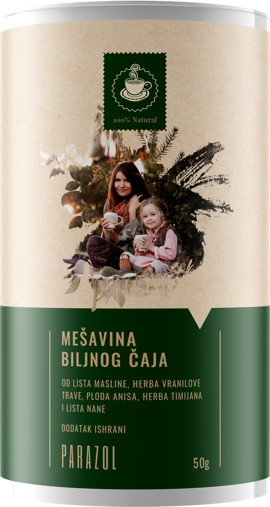
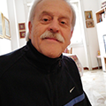

В сряда сутринта пристигнахме в Разград, Разградска област. Пътят към дома за стари хора минава по калдъръмена улица, покрай стари огради и лаещи кучета. „Търсите ли свещеника?" — попита ни продавачката в магазина. „Идва всеки четвъртък. Старците го чакат на портата. Има хора, които плачат, когато го видят."
Така за пръв път чухме за отец Стефан — 50-годишния свещеник, който напусна удобството на своята енория в София, за да прави това, което никой друг не иска: обикаля из домовете за стари хора из цяла България и седи при онези, при които вече никой не сяда.
Причината за изоставянето? Почти винаги е една и съща: старите хора станали „трудни". Постоянна умора. Подуване след всяко хранене. Кожа, която ги сърби нощем. Събуждане в три сутринта. Раздразнителност, за която сами се извиняваха. Децата ги водеха по лекари, плащаха изследвания — и всеки път чуваха едно и също: „В границите на нормата. Възрастта, какво искате." И постепенно спираха да ги водят. После спираха и да идват.
„Видях как изглежда забравеността. И реших, че не мога да стоя безучастен" Ексклузивно интервю с отец Стефан — свещеникът, който напусна удобството на своята енория, за да помогне на тези, за които никой не се грижи

Отец Стефан: „За пръв път влязох в дом за стари хора преди много години, посещавайки най-възрастните си енориаши. Не бях подготвен за това, което видях. Една 76-годишна жена, баба Иляна, седеше на ръба на леглото — бледа, отпаднала, с тъмни кръгове под очите и с ръце, изподраскани от чесане. 4 месеца не беше напускала стаята. Хвана ме за ръката и каза: «Отче, дъщеря ми ме доведе тук, защото се оплаквах прекалено много. Всички изследвания ми бяха добри. Значи си измислям. Това беше преди две години. Оттогава не е идвала.»
В ОНЗ МОМЕНТ РАЗБРАХ, ЧЕ ИМЕННО ТЕЗИ ХОРА СЕ НУЖДАЯТ НАЙ-МНОГО ОТ МЕН — ОНЕЗИ, ЗАБРАВЕНИ ОТ ЦЕЛИЯ СВЯТ, ТОЧНО ЗАЩОТО НИКОЙ НЕ ПОТЪРСИ КАКВО ИМ Е."
Отец Стефан говори спокойно, но с интензивност, която не може да бъде пренебрегната. От две години обикаля домовете за стари хора из цяла България — от Черноморския бряг до Балкана, от Видинско до Родопите. И навсякъде открива една и съща тревожна картина: хора, които години наред лекуват грешното нещо, докато истинската причина никой не търси.
„Повечето от тези хора са попаднали тук заради оплаквания, които никой не обясни. Умора. Подуване. Кожа. Безсъние. Лекуваха ги от «гастрит», от «алергия», от «нервоза» — всеки специалист лекуваше своя симптом, а никой не потърси какво ги предизвиква. И в момента, в който станаха неудобни, семейството реши, че са станали тежест. Тази дума я чувам най-често в домовете за стари хора: „тежест". Собствените им деца ги наричат тежест."
„Хапчетата от аптеката не решават нищо — удрят един вид, а оставят десетки" Отец Стефан обяснява защо обичайното лечение в домовете за стари хора и в аптеките се проваля
Отец Стефан:
— Ще кажа откровено: това, което видях в тези домове за стари хора, ме уплаши. Хора на 55-80 години, на които от години дават хапчета за стомах, кремове за кожа и капки за сън — лекарства, които прикриват оплакването за няколко седмици, без да решават причината. Тялото им продължава да отслабва. А когато някой все пак изпие аптечно хапче срещу паразити, то поразява най-много един-два вида, а останалите продължават спокойно.
Това е един порочен кръг: оплакване → хапче → облекчение за няколко седмици → оплакването се връща → по-силно хапче → черният дроб се натоварва → нови лекарства за черния дроб. И никой не им казва истината: че съществува начин тялото да се прочисти напълно, а не само да се заглушат симптомите.

Хроничната умора, подуването, кожните проблеми и „нервозата" след 45-годишна възраст не са „нормални за тази възраст" — много често са знак, че тялото носи паразити, които го изтощават отвътре.
Хапчетата за „гастрит" и „алергия" само прикриват симптомите, докато истинската причина тихо продължава да се размножава. Без пълно прочистване на организма тялото година след година отслабва — а паразитите се разпространяват в черния дроб, жлъчните канали и мускулите.
Отец Стефан:
— Моля ви, разберете сериозността на ситуацията. Тези хора обикаляха лекари с години заради „нервоза", „алергия", „гастрит", „мигрена" — и излизаха с папка изследвания, в която пишеше „в границите на нормата". Хартията мълчеше, а причината продължаваше да работи. ОБИКНОВЕНИТЕ ХАПЧЕТА ОТ АПТЕКАТА НЕ ИЗЧИСТВАТ ТЯЛОТО НАПЪЛНО — УДРЯТ ЕДИН ВИД, А ОСТАВЯТ ОСТАНАЛИТЕ ДА ПРОДЪЛЖАТ ДА РАЗРУШАВАТ ОТВЪТРЕ!
И това, което ме боли най-много: тези хора нямат никой. Семейството ги е изоставило точно когато оплакванията им станаха неудобни. Сами са, в леглото, в малка стая, и чакат. Някои вече не знаят за какво чакат.

Важно е да се подчертае: в повечето случаи, дори при периодичен прием на аптечни хапчета, проблемът се връща, защото истинската причина — няколко вида паразити, които живеят на различни места в тялото — остава нерешена.
След години носене на паразити много хора губят не само енергия, но и здравето на черния дроб, жлъчката и червата. Хроничната интоксикация, отслабеният имунитет, постоянните възпаления — това е цената на това, че никой не е потърсил истинската причина.
Истории, които промениха живота ми — и ще променят начина, по който гледате на старостта
Отец Стефан:
— Позволете ми да разкажа какво виждам седмица след седмица. Не числа. Не статистики. Хора. Хора с имена, с истории, с деца, които вече не идват — и с оплаквания, които никой не е потърсил докрай.


Ето признаците, с които се сблъсквам най-често в домовете за стари хора — и които милиони хора в България отписват на „годините", „стреса" или „лошото хранене":
- Постоянна умора и отпадналост — спите 8 часа, а се събуждате като пребит;
- Подуване, газове, тежест в стомаха след хранене — „като че ли нещо ври в червата";
- Редуване на запек и диария без ясна причина;
- Кожни проблеми — обрив, сърбеж, екзема, „алергии", които идват и си отиват отникъде;
- Ненаситен глад за сладко и брашно — паразитите се хранят със захар;
- Скърцане със зъби насън, неспокоен сън, събуждане около 3 часа през нощта;
- Анемия и недостиг на желязо, които не се оправят дори с хапчета;
- Тъмни кръгове под очите, бледа кожа, чуплива коса и нокти;
- Сърбеж около ануса, особено нощем;
- Раздразнителност, „нервоза", мъгла в главата, слаба концентрация;
- Чести настинки и инфекции — тялото харчи силите си за паразитите;
Всеки от тези признаци лесно се отписва на нещо друго. И точно затова паразитите остават неоткрити с години. Пренебрегването им след 45-50-годишна възраст води до един единствен изход: ХРОНИЧНА ИНТОКСИКАЦИЯ НА ОРГАНИЗМА, ОТСЛАБЕН ИМУНИТЕТ, УВРЕДЕН ЧЕРЕН ДРОБ И ЧЕРВА — И ТЯЛО, КОЕТО ГОДИНА СЛЕД ГОДИНА РАБОТИ ВСЕ ПО-ТРУДНО.
Всеки ден с паразити в тялото е още един ден на интоксикация! Хиляди пенсионери в домовете за стари хора са попаднали там именно защото години наред лекуваха грешното нещо — „гастрит", „алергия", „нервоза" — докато истинската причина продължаваше да ги изтощава. Действайте сега — за себе си или за близките си — преди да е станало твърде късно!
„Разбрах, че трябва да има начин тялото да се прочисти нежно — а не да се трови със силна химия" Как един скромен свещеник намери отговора там, където никой не го търсеше — в едно село, при ветеринарката
Отец Стефан:
— След една година посещения в домовете за стари хора осъзнах една болезнена истина: с хапчета за стомах и кремове за кожа няма да помогна на никого. Тези лекарства просто заглушават сигнала, докато тялото продължава да отслабва. Имах нужда от нещо напълно различно: начин да се махне товарът, а не да се прикрие.
Отговорът дойде оттам, откъдето най-малко го очаквах. В едно село край Враца, докато чаках да ме закарат до дома за стари хора, разговарях с д-р Елена Георгиева — селска ветеринарка с над 30 години стаж. Разказах ѝ какво виждам. Тя ме изслуша и попита нещо, което не мога да забравя и до днес:
«Отче, а тези хора кога за последно са прочистили себе си? Кучето и котката ги чистим от паразити два пъти годишно. Добитъка — по график. Конете — също. Защото иначе животното отслабва, закърнява и умира. А човекът, който живее с тези животни, яде същото месо, копае в същата пръст и пие от същия кладенец, не се прочиства нито веднъж в живота си.» Стоях и мълчах. Тя беше права: животното е защитено по-добре от стопанина си. Д-р Георгиева години наред правеше за добитъка билкова смес — задължително билкова и нежна, защото млякото и месото на тези животни отиват на трапезата на хората.
Билковата формула на д-р Елена Георгиева съдържа следните съставки:
- Пелин (Artemisia absinthium) Традиционно най-известното билково средство за изгонване на паразити от червата
- Вратига (Tanacetum vulgare) Силно действа срещу чревни паразити и техните яйца
- Карамфил (Eugenol) Разгражда яйцата и ларвите — онова, което другите билки не достигат
- Черен орех (Juglans nigra) Екстракт от черупката: прочиства червата и помага за изхвърлянето на паразити
- Тиквени семки (Cucurbita) Нежно действат върху паразитите и успокояват лигавицата на червата
Тези билки трудно се съчетават в правилното съотношение. Ако сместа не е точна, чаят поразява само един вид паразити — точно както аптечното хапче — а останалите остават. Тайната е в това, че действа на няколко вида едновременно: и на възрастните, и на яйцата, и на ларвите.
Така се роди Parazol — билков чай, който прочиства организма от паразити напълно и нежно, без силна химия
Отец Стефан:
— Заедно с д-р Георгиева и надеждна лаборатория адаптирахме сместа за човека: точните билки, точното съотношение, формата на чай, която е естествена за тялото. Нарича се Parazol. Приготвя се като обикновен чай — една чаена лъжичка се залива с гореща вода, сутрин и вечер. Курсът обикновено трае от 3 до 4 седмици.

Силата е в постепенността и в пълнотата: първо върху възрастните паразити, после върху техните яйца и ларви, след което тялото изхвърля всичко навън, а червата и черният дроб се възстановяват. Аптечното хапче удря веднъж и оставя останалото.
„Parazol" е уникален. Всяка билка — в точното съотношение — поразява паразитите в различни фази: възрастни индивиди, яйца, ларви. Затова прочиства напълно, а не частично. Най-важното: действа нежно, без нападение над черния дроб и бъбреците.
Отец Стефан:
— Първите бяха изоставените стари хора в домовете. Онези, за които никой вече не се интересуваше. Даваха ми чашите обратно и мълчаха. А на третия-четвъртия ден баба Маргарита, която месеци наред се будеше в три през нощта, ми каза, че е спала до сутринта. И двамата заплакахме.
4 стъпки, по които Parazol прочиства организма от паразити — на всяка възраст
4 основни действия на чая „Parazol":
- Изгонване на възрастните паразити: Още в първите дни на курса пелинът и вратигата действат върху възрастните паразити в червата — отслабват ги и помагат на тялото да ги изхвърли по естествен път. Не един вид, както аптечното хапче, а няколко наведнъж.
- Унищожаване на яйцата и ларвите: Карамфилът (евгенол) разгражда яйцата и ларвите — онова, което другите билки не достигат. Тази стъпка е ключова: без нея паразитите се връщат от останалите яйца. Ето защо чаят прочиства напълно, а не частично.
- Детоксикация от отпадъчните вещества: Докато паразитите си отиват, тялото се прочиства от отпадъчните вещества, които те години наред са отделяли в кръвта. Черният орех и тиквените семки помагат на черния дроб и червата да изхвърлят натрупаните токсини — отшумяват умората и мъглата в главата.
- Възстановяване на червата и имунитета: След прочистването билковата смес успокоява лигавицата на червата и помага на тялото да възстанови силите си. Енергията се връща, кожата се успокоява, храносмилането се нормализира, а имунитетът престава да се харчи напразно.
„Parazol първо изпробвах при хората в домовете за стари хора — резултатите надминаха всичко, което видях през всичките години на моето свещеническо служение" Наблюдение върху 2340 души, на възраст 45-86 години
Отец Стефан:
— Първите бяха изоставените стари хора от домовете. Онези, за които никой вече не се грижеше. Резултатите бяха толкова ясни, че за тях се заговори и извън домовете — до над 2300 души от цяла България, с всички онези оплаквания, които години наред им отписваха на възрастта.
Видях хора, които години лекуваха „гастрит" и „алергия" — как за няколко седмици им се връща енергията, кожата се успокоява, храносмилането се нормализира. Медицинските сестри плачеха. Аз плаках с тях.
Резултати от наблюдението на „Parazol" — 2340 души, 45-86 години
| Изчезване на подуването и тежестта в стомаха | 96,2% |
| Възстановяване на енергията, изчезване на хроничната умора | 94,7% |
| Успокояване на кожата (обрив, сърбеж, „алергии") | 98,1% |
| Нормализиране на храносмилането и изхождането | 87,3% |
| Спиране на желанието за сладко | 91,5% |
| По-добър сън, спиране на скърцането със зъби | 89,4% |
| Подобряване на кръвната картина (желязо) | 93,8% |
| Изчезване на мъглата в главата, по-добра концентрация | 95,6% |
| Изчезване на тъмните кръгове под очите | 97,0% |
| Укрепване на имунитета, по-редки инфекции | 94,3% |
Случаи, които разбиха сърцето ми — и дадоха най-голяма надежда Баба Иляна, 84 години. Изоставена в дома за стари хора, защото „се оплаквала прекалено много". След курс с Parazol — за първи път от години се събуди отпочинала, а кожата ѝ се успокои.
Баба Иляна беше първата, на която отец Стефан помогна в дома за стари хора, в Старозагорска област. На 84 години, след шест години обикаляне по лекари, с изрядни изследвания и тяло, което с всеки ден отслабваше все повече. Синът ѝ я е довел, защото „не можел повече да слуша оплакванията".

„Шест години се влачих от лекар на лекар. Постоянно уморена, подута, кожата ми гореше и сърбеше, косата ми падаше. Казваха ми: гастрит, алергия, нервоза, годините. Пиех всичко, което ми даваха. Нищо не помагаше.
Най-лошото беше, че всички изследвания бяха «изрядни». Тогава как да съм така изцедена? Започнах да мисля, че си измислям. Синът ми ме доведе тук и каза: «Мамо, ще те посещавам всяка неделя.» Две години не е дошъл. Не го обвинявам — има си живот. Но нощем, когато не спя и никой не е до мен… трудно е.
После дойде отец Стефан. Той беше първият човек, който не ми каза «това е от годините». Обясни ми какво може да се случва в тялото ми и ми даде чая. На третия ден стомахът ми беше по-лек, отколкото от години. След три седмици кожата ми се успокои за пръв път. Месец по-късно се събудих отпочинала.
Медицинската сестра заплака, когато ме видя. Аз — още повече. Не защото ми беше по-добре. А защото някой — свещеник, когото никога не бях познавала — потърси какво ми е, а собственият ми син не потърси.
Баба Иляна, 84 години, дом за стари хора в Старозагорска областДруг случай: Любен, 58 години, цял живот шофьор на камиони, години лекуван от „гастрит", който не отминаваше с никакви хапчета. Жена му го е изоставила, когато вече не можел да работи.

„30 години бях зад волана. Тежест в стомаха след всяко ядене, гадене, подуване като барабан. Пет години ме лекуваха от гастрит. Снимаха ме, даваха ми хапчета. Нищо. Отслабвах, а ядях нормално. Жена ми тръгна — каза, че не може да гледа болен човек. Не я обвинявам.
Сестра ми чу за отец Стефан от съседката. Изпрати ми чая Parazol. Започнах да го пия сутрин и вечер. След десетина дни — за първи път от години ядох и после не ме болеше и не ме подуваше. След месец се чувствах като нов човек.
Онова, което най-много ме ядоса: пет години и куп пари на вятъра за грешна диагноза. А никой не помисли да погледне. Без отец Стефан може би сега щях да съм в дом за стари хора."
„Parazol не прикрива симптомите — той прочиства причината от тялото" Не само обитателите на домовете за стари хора получават полза. Всеки над 40 години, усещащ първите признаци, може да предотврати години ненужно мъчение.
Отец Стефан:
— Курсът обикновено трае от 3 до 4 седмици, а при онези, които години носят проблема, може и по-дълго. Един курс е достатъчен, за да се прочисти тялото — това не е нещо, което се пие постоянно. Д-р Георгиева казва да се прави веднъж в годината, както се прави на животните.
Parazol действа постепенно: първите дни отшумява подуването и тежестта в стомаха, после се връща енергията, кожата се успокоява, храносмилането се нормализира, а сънят става спокоен. Видях хора на 80 години, които отново излизаха в двора. Видях кожа, която години наред горяла, да се успокои. Видях хора, които за пръв път от години спаха до сутринта. И при всеки случай — видях сълзи от радост.
Благодарение на билковата формула на д-р Елена Георгиева хиляди хора в България прочистиха организма си. Ето някои от случаите:


Отец Стефан:
— Тези случаи са живо доказателство, че тялото е способно да се възстанови — щом му махнеш товара, който го е изтощавал. Без силна химия. Без хапчета, които разрушават стомаха. А това, което ми носи най-голяма радост: повечето от тези хора са обитатели на домовете за стари хора, при които никой не идва. Но Бог не ги е забравил. И Parazol не ги забравя.
Защо Parazol не се продава в аптеките? И как може да се набави?
Отец Стефан:
За съжаление производството на Parazol е бавен и внимателен процес. Билките трябва да бъдат набрани в точното време и съчетани в точното съотношение — пелин, вратига, карамфил, черен орех, тиквени семки. Не сме в състояние да произвеждаме количествата, които аптечната мрежа изисква.
Нужни са поне 2-3 години, преди Parazol да може да се появи в аптеките. Дотогава продуктът се разпространява изключително онлайн, в рамките на програми за подкрепа, два пъти в годината. Но отстъпката може да достигне 50% — което е от жизненоважно значение за пенсионерите.
Моля: НЕ ПРОПУСКАЙТЕ ПРОГРАМАТА ЗА ПОДКРЕПА. Не само за себе си — но и за родителите, бабите и дядовците, близките ви, които може би от години лекуват грешното нещо. Или за онези, вече в дом за стари хора, сами, на които никой не изпраща нищо. Бъдете онзи човек, който потърси причината.
За да направите поръчката, използвайте формуляра по-долу.
Последният шанс да се сдобиете с Parazol тази година — за себе си или за близък, който от години лекува грешното нещо

Отец Стефан:
— Запазих 20 000 опаковки изключително за читателите на този портал. Всеки български гражданин над 40 години може да получи до 50% отстъпка, но програмата е валидна до .
Не чакайте, докато умората, кожата и стомахът станат част от всеки ден. Докато харчите пари за грешни диагнози. И най-вече — не чакайте, докато станете „тежест" в очите на семейството. Спомнете си какво ми каза ветеринарката: животните чистим два пъти в годината, а себе си — нито веднъж.
Напишете вашето име и телефонен номер. Нашият консултант ще се свърже с вас, ще избере подходящата програма и ще организира доставката в рамките на 2-3 дни с куриер или по пощата, директно на посочения адрес.
С молитва и уважение — отец Стефан. Грижете се за близките си. Може би единственото, от което се нуждаят, е някой най-после да потърси какво им е.
Актуализация: : Поради огромния интерес запасите могат да се изчерпят по-рано от очакваното! Днес — — последният ден на програмата или до изчерпване на запасите.
Внимание! Не затваряйте и не обновявайте страницата, в противен случай резервираната за вас опаковка Parazol ще бъде предоставена на друго лице!
Възползвайте се от офертата — вашето място е запазено: Бр. 19 974
директно на посочения адрес

КОМЕНТАРИ
Димитрова Мария
Заплаках, когато прочетох тази статия. Майка ми е на 76 години и е в дома за стари хора от 2 години — именно защото „се оплакваше непрекъснато", а изследванията ѝ бяха добри. Всичко съвпада. Абсолютно всичко. Поръчах ѝ Parazol. Може би все още не е твърде късно.
Станева Ева
Миналия петък получих Parazol. Пия го сутрин и вечер. 5 дни след — подуването, което ме мъчеше три години, го няма. Историята на свещеника ме убеди да поръчам. Удивителен човек.
Колева Анна
На 69 години съм. Седем години „алергия" — кремове, хапчета, капки, двама дерматолози. Ръцете ми горяха и се чешех нощем до кръв. Три седмици с чая и кожата се успокои. Седем години, а отговорът бил друг. Не мога да ви опиша яда си.
Петров Стефан
Шофьор съм, по 10 часа зад волана. Умора, мъгла в главата и глад за сладко, който не можех да овладея. Мислех си: годините, стресът. Четвърта седмица — главата ми е бистра. За пръв път от години.
Стоянов Петър
Поръчах 3 опаковки — за себе си, за жена ми и за тъста в дома за стари хора. Онова изречение за животните го прочетох три пъти. Имам две кучета и овце. Не можем да си позволим да чакаме още.
Михайлова Андреа
Размишлявам дали да поръчам за баща ми. На 78 е, от 3 години е в дома за стари хора — от години се оплаква от храносмилането и от умора, а лекарите не откриват нищо. Не е ли късно на тази възраст?
Тодорова Юлия
Андреа, майка ми е на 82! Години анемия, която не се оправяше с никакво желязо. Един месец с чая и кръвната картина се вдигна — джипито ѝ поиска да види старите изследвания, за да сравни. Поръчай.

Маринов Лазар
Андреа, поръчай спокойно. На 78 съм и точно това имах — никой не знаеше какво ми е. Месец — и се оправих. На баща ти му трябва повече, отколкото си мислиш.
Белева Катерина
От седмица го пия. Вече не се будя в три през нощта. Девет години се будех в три. Не мога да повярвам, че беше толкова просто.
Недева Елизабета
На 68 години мислех, че е нормално да си постоянно уморена. Тази пролет прекопах цялата градина сама. Снаха ми не повярва, докато не дойде да види.
Балев Йосиф
На 82 години съм. Миналата година едва се движех — умора, лошо храносмилане, хващах всяка настинка. Децата говореха за дом за стари хора. Пробвах без надежда, честно казано. Работи. Не се разболявам при всяко течение.
Тодоров Тодор
Жена ми се мъчи от години — кожа, умора, „нервоза". Страхувах се да не е нещо по-лошо. Четвърта седмица: вчера сама отиде на пазара и се върна с цветя. Не помня кога за последно е купувала цветя.
Петрова Ивелина
Чета това и си мисля за свекърва ми, която почина преди четири години в дом за стари хора. Точно тези оплаквания. Точно тези думи — „нерви", „годините". Никой нищо не потърси. Поръчах за майка ми и за баща ми, докато не е станало и с тях същото.
Лазарова Сузана
Куриерът го донесе за два дни, платих на вратата. На кутията не пише нищо, проверих — живея в блок и съседите всичко виждат. Започвам утре.
Вълчев Гавраил
Питах в две аптеки — няма го и не го поръчват. Едната фармацевтка ме погледна особено и каза: „такива неща не минават през нас". Ето ви отговор.